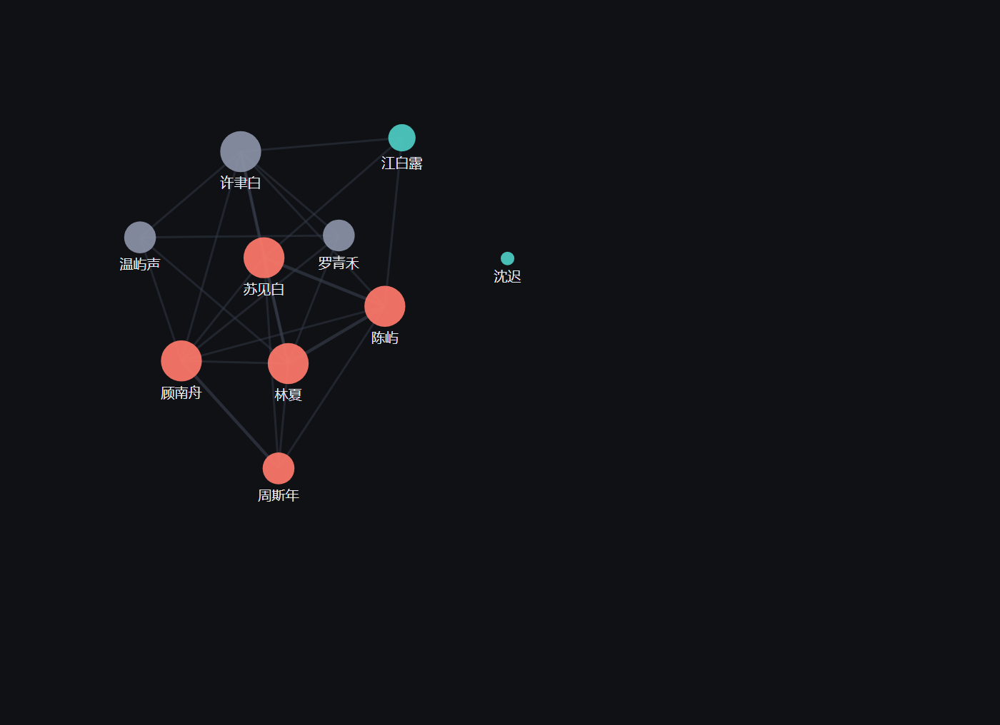

把你的微信记录变成一张「人」的图谱 —— 谁是谁的人、在哪些群共现、
答应过什么、上次聊到哪里。
本地优先，数据不出本机；任何 agent 都能查、能写。
消息流回答「今天要回谁」，关系谱回答「他是谁的人」。 后者只能从结构里长出来——两个人在几个群里一起出现过，就是一条边。

两人共同出现在 N 个群 → 一条权重 N 的边。不需要手动整理，摄取时就算出来。
基本档案 + 近期对话 + 所在群 + 关系边 + 待办 + 关键事件，一屏看完。
agent 看完对话的判断写回 event/todo 表，每条带原话引用，可溯源。
CLI 给人和终端，127.0.0.1 上的 HTTP API 给 agent。--json 全结构化输出。
库落在你自己的目录，源库全程只读。PII 入库自动脱敏，不上云。
微信只是第一个 adapter。要接飞书或邮件，写一个文件即可，上层零改动。
# 装依赖（唯一必需项） pip install pycryptodome # 零配置先体验（合成数据，不用连微信） renpu doctor && renpu init && renpu ingest --demo # 查一个人 / 看关系谱 / 出可视化 renpu who 林夏 renpu edges renpu graph --share # 单文件 HTML，可直接发人
pip install pycryptodomerenpu init 然后 renpu ingest --demo，全程不碰你的微信renpu graph，浏览器打开一个 HTML 文件wc_live 路径，然后 renpu ingest --pullrenpu serve 起本地 API，任何 agent 通过 HTTP 调用详细步骤见 QUICKSTART.md， 接真库见 INSTALL.md， 卡住了看 TROUBLESHOOT.md。
市面上有做得不错的同类项目，它们回答「今天有什么该做」。 仁谱回答另一个问题：「他是谁的人」。两者不冲突，可以并存。
| 仁谱 Renpu | 情报日报类工具 | |
|---|---|---|
| 核心对象 | 人（关系） | 消息（情报） |
| 主输出 | 关系谱 + 事件 + 待办 | 日报 HTML + 商机清单 |
| 查「X 是谁」 | 档案 + 群 + 关系边 | 只能捞出 X 说过的话 |
| 关系推理 | 群共现自动建图 | 无 |
| 跨渠道统一人实体 | 已预留（同一人多渠道合并） | 按会话切片 |